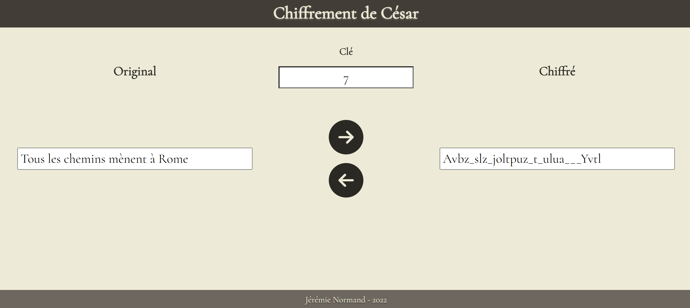
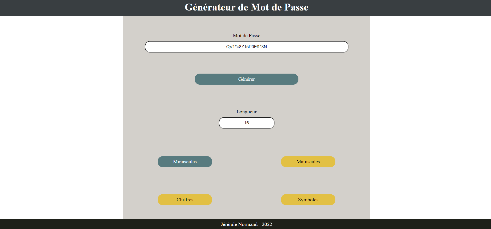
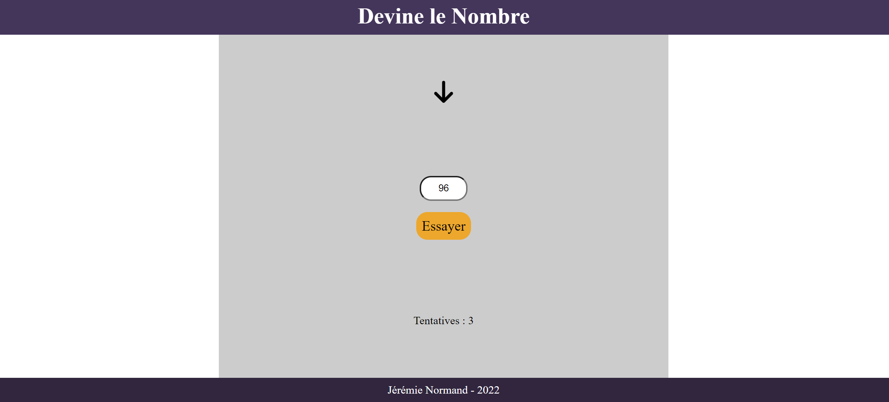

Roche, Papier, Ciseaux
Lien vers l'application

Dans cette application web, il est possible de se mesurer contre l'ordinateur dans une partie de Roche, Papier, Ciseaux. L'utilisateur n'a qu'à utiliser les boutons situés en bas à gauche de l'écran pour sélectionner une option parmi roche, papier et ciseaux. Il ne reste plus qu'à appuyer ensuite sur le bouton 'Jouer' pour lancer une manche du jeu et actualiser le score.
Chiffrement de César
Lien vers l'application

Cette application permet de chiffrer un message à l'aide du code de César. On écrit d'abord le message à chiffrer, puis on choisit une clé qui correspond au décalage des lettres selon leurs positions dans l'alphabet. Il est aussi possible de déchiffrer un message codé à partir de la clé en inversant le processus.
Générateur de Mot de Passe
Lien vers l'application

Avec cette application Web, l'utilisateur peut générer des mots de passe de façon complètement aléatoire. Il suffit d'inscrire dans le champ désigné le nombre de caractères que contiendra le mot de passe, puis l'utilisateur peut choisir le type de caractère qu'il désire avoir a l'intérieur de son mot de passe.
Devine le Nombre
Lien vers l'application

Cette application est un jeu de devine le nombre. Un nombre aléatoire entre 1 et 100 est choisi par l'ordinateur lorsque l'utilisateur appuie sur bouton 'Commencer'. Ensuite, il peut essayer de deviner le nombre en se servant des indicateurs 'plus haut' et 'plus bas'. Le nombre de tentatives est compilé plus bas.